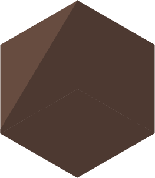
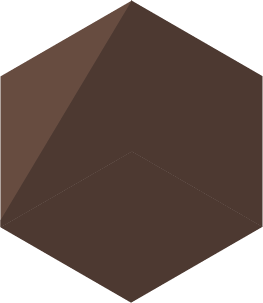
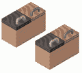
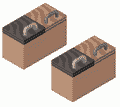

Tunnlar
Från början befinner sig bävern bakom en av de mörka dörrarna.
Försök hitta den genom att öppna dörrarna.
Efter att dörren stängs flyttar sig bävern antingen ett steg till höger eller ett steg till vänster.
För att få full poäng, hitta bävern på öppningar.


 



 
